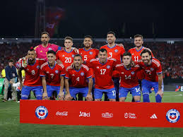
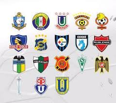
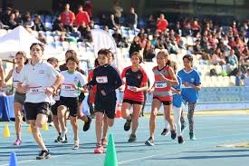
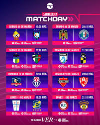
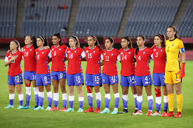
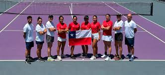
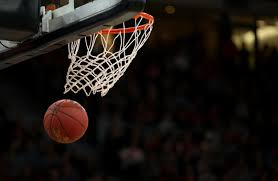
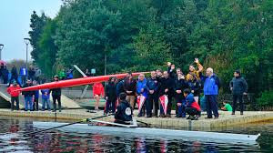
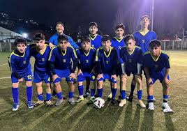
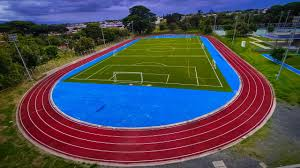

Chile mostró una mejor versión ofensiva tras su último amistoso internacional
Categoría: Selección Chilena
La Roja dejó señales positivas en ataque luego de una presentación que permitió observar nuevos nombres, variantes tácticas y una mayor intensidad en el segundo tiempo.
Leer más
Clubes chilenos enfrentan una semana decisiva entre torneo local y competencias internacionales
Los equipos afinan sus planteles y estrategias en una etapa clave de la temporada.
Leer más
Nuevas promesas del atletismo escolar comienzan a destacar en competencias regionales
Entrenadores valoran el crecimiento del semillero deportivo y el interés de jóvenes talentos.
Leer más
La agenda deportiva nacional se intensifica con amistosos, campeonatos y torneos escolares
Distintas disciplinas concentran actividades durante las próximas semanas.
Leer másMás noticias deportivas

El fútbol femenino sigue ganando espacio en torneos y formación deportiva
Clubes y escuelas refuerzan programas para impulsar la participación y el alto rendimiento.
Leer más
Tenistas chilenos buscan consolidarse en el circuito con nuevos desafíos internacionales
El calendario competitivo abre opciones para sumar experiencia y mejorar posiciones.
Leer más
El básquetbol nacional apuesta por fortalecer series menores y competencias locales
Dirigentes y entrenadores destacan la necesidad de continuidad en los procesos formativos.
Leer más
Eventos regionales promueven actividad física y participación comunitaria
Municipios y organizaciones impulsan encuentros abiertos para fomentar hábitos saludables.
Leer másAnálisis y seguimiento

Procesos juveniles concentran atención por su impacto en el recambio deportivo
Especialistas plantean que el trabajo formativo será decisivo para sostener resultados.
Leer más
Mejoras en infraestructura deportiva aparecen como desafío prioritario para comunas
La disponibilidad de recintos adecuados sigue siendo clave para masificar la actividad física.
Leer más